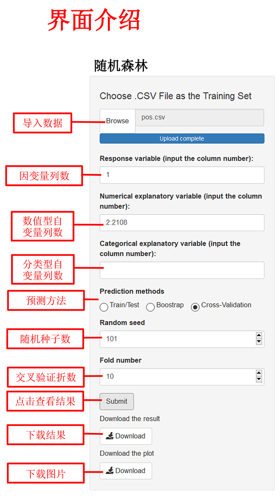
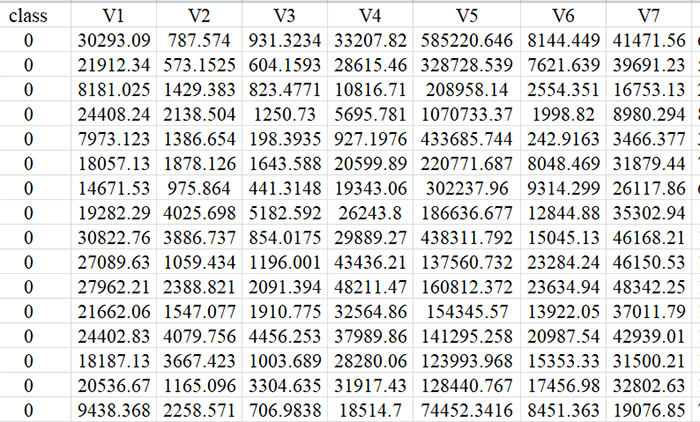
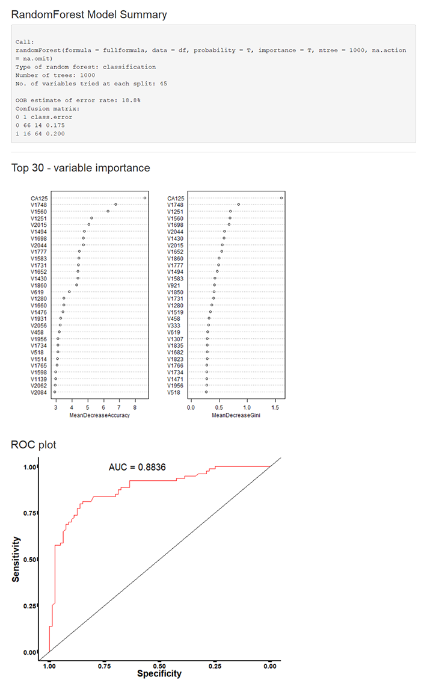

| 一、随机森林简介 | |
| 随机森林（Random forest, RF）是一种基于分类树算法的组合分类模型。RF具有很高的预测准确率，对异常值和噪声有较强的容忍度，可以处理高维数据，并能有效地分析非线性和具有交互作用的数据。 |  |
| 二、数据格式 | |
|  | |
| 注： 1、数据格式为“.csv”，数据中避免中文、空格或特殊字符 2、数据变量名必须为英文、阿拉伯数字或下划线的组合 3、自变量列数可以输入多列，以英文状态下的逗号或冒号分隔，如:2,3,4或2:4 4、因变量必须为二分类变量 5、导入数据后，各变量所对应的列数可在输出界面显示和查询 |
|
| 三、输出结果展示 | |
| 输出结果包括随机森林模型概况、VIM值（最多展示前30个）、预测结果的ROC曲线。下载表格中，提供全部变量的VIM值。 示例如下： |
|
|  |